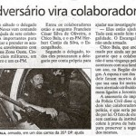

Só agora consigo parar em frente ao computador desde a sexta última (o post de ontem foi agendado), e ter a oportunidade de comentar o recente embaraço no qual o editor de blog policial Luiz Alexandre, capitão da PMERJ, foi envolvido.
Foi convocado para prestar esclarecimentos na CGU, a corregedoria geral unificada do Rio, que apura transgressões disciplinares cometidas por policiais civis, e transgressões disciplinares graves cometidas por policiais militares e bombeiros. O caso, ele mesmo narra em seu blog.
Pesa contra ele a acusação de ter ofendido a instituição Polícia Civil, ao relatar fatos envolvendo pessoas suspeitas de práticas criminosas e que estariam à serviço de uma delegacia da PCERJ.
Inicialmente, posso afirmar de minha parte, enquanto policial civil concursado e aprovado em concurso público, que não me senti nem um pouco ofendido, nem tive minha honra abalada, ao ler tais denúncias. Ao contrário, vejo na pessoa do capitão Luiz Alexandre um homem que, assim como eu, e muitos outros que acabam por não se manifestar publicamente, um grande desejo de mudanças nas instituições policiais. Mudança para melhor.
De outro lado, é de se ressaltar que todas as postagens em questão do editor do blog foram tão somente breves comentários e convites ao raciocínio, a partir de denúncias veiculadas pela imprensa tradicional do Rio. Os fatos transcritos no blog, bem como o vídeo que comprova cabalmente as denúncias, tudo foi noticiado oficialmente por jornais como O Globo, O Dia e Jornal do Brasil.
E, sobre o caso em si, as últimas revelações nada mais são do que a repetição de notícias já divulgadas meses atrás, que dão conta que indivíduos envolvidos com milícias armadas que instituem poder paralelo ao estado, tal como faz o tráfico de drogas, estariam se passando por policiais civis, não só travestidos com uniformes da Polícia Civil (e isto sim me envergonha muito), como tripulando livremente viaturas oficiais e portando armamento patrimonial, de uso restrito, é bom lembrar. Como na notícia na figura acima (clique para ampliar).
Todas estas pessoas foram citadas na CPI das Milícias, elaborada pela Assembléia Legislativa, segundo a qual são suspeitos de cometerem diversos crimes, conforme bem elaborado relatório do deputado Marcello Freixo.
A mim, parece que, em se fazendo uma analogia, seria como chamar o traficante Fernandinho Beira-mar para ajudar nas investigações sobre o tráfico de drogas no Rio. Deixá-lo vestir uma camisa da Polícia, portar armamento de uso restrito, e partir com ele para prender traficantes da facção criminosa rival.
Convenhamos, é uma situação insólita, e inimaginável. E creio ser isso que tanto incomoda Luiz Alexandre e tantos outros, uma massa silenciosa de inconformados. Inconformados com o que tem sido feito com suas queridas corporações. Inconformados por não verem os algozes de suas instituições sequer ameaçados de punição, agindo sob um manto protetivo e com autorização oficial para utilizarem-se de expedientes nada ortodoxos com o pretexto de estarem combatendo seriamente o crime organizado. Só espero que no final tudo dê certo...
E, Luiz Alexandre, continue de cabeça erguida e lutando pelo que entenda ser o certo e o justo, és um exemplo à todos.